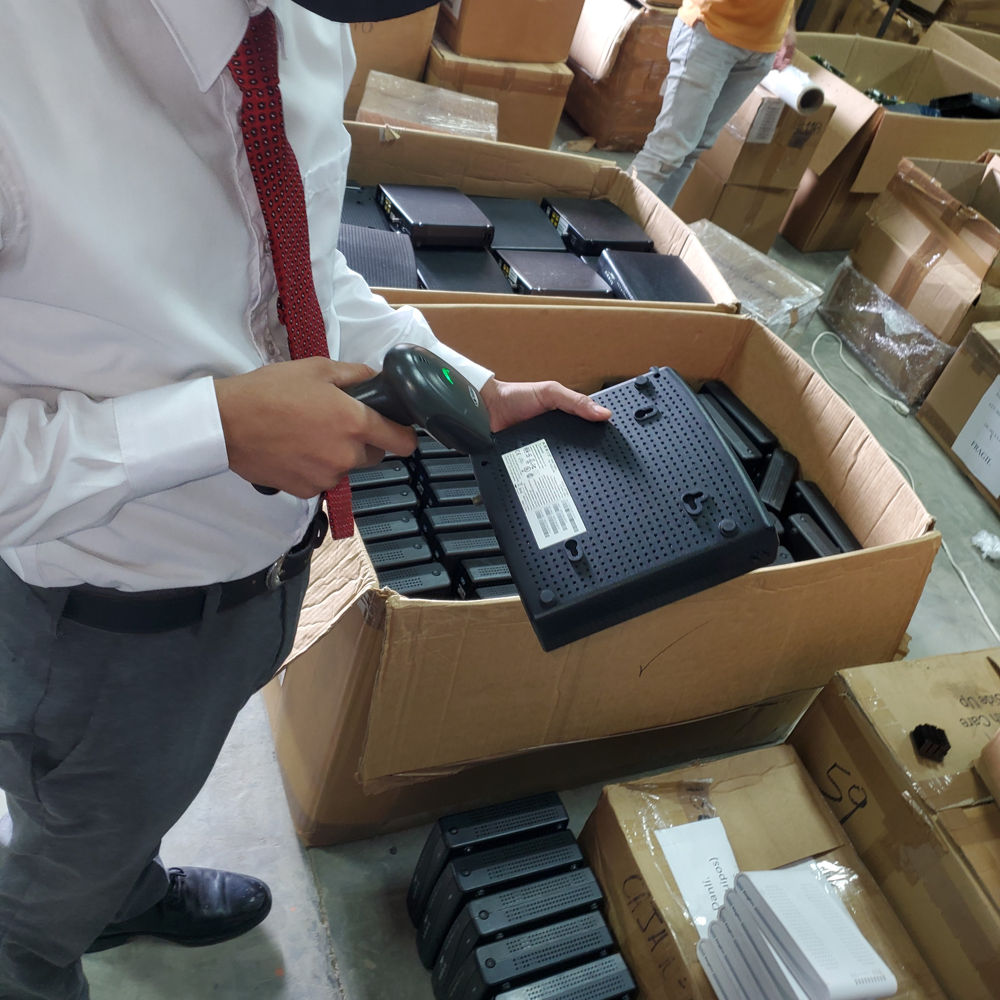
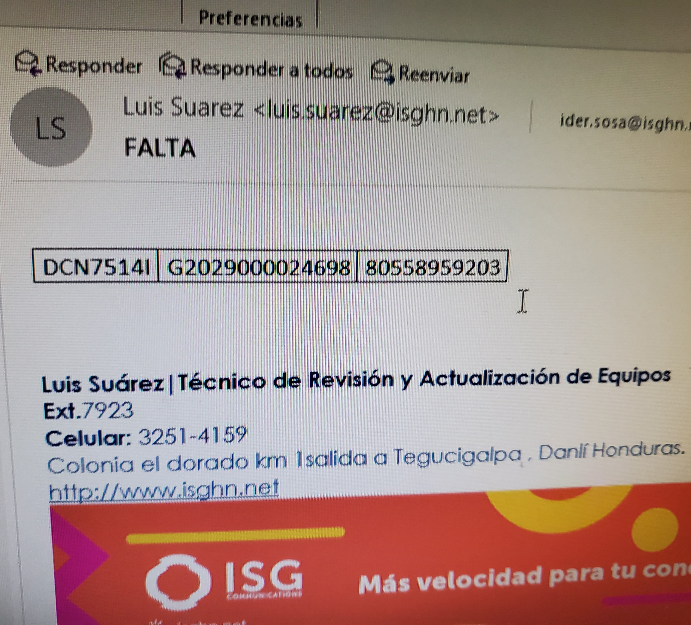
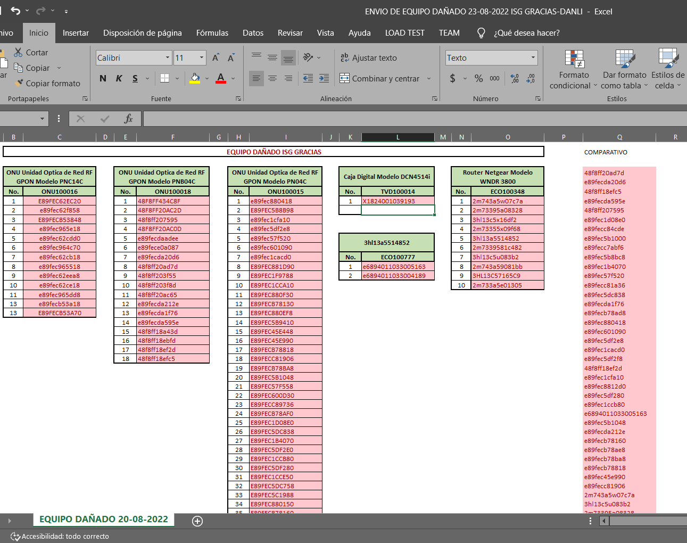

ISG
ISG
ISG
En esta actividad hay que revisar que estén todos los equipos
enviados desde cualquier parte del pais, no puede faltar alguno,
y en caso de que falte alguno, hay que informarlo, porque sino se reporta
como perdido, y le toca al encargado de la caja pagarlo;
Se revisa de la siguiente forma:
-Se abre el documento (hoja de excel) donde vienen todos los números de series de los equipos.
-En una columna a parte se hace una comparativa usando los valores combinados.
-Se escanean los equipos uno por uno (si no se puede escanear, hay que hacerle la etiqueta de nuevo).
-Se verifica que todos los equipos estén.


